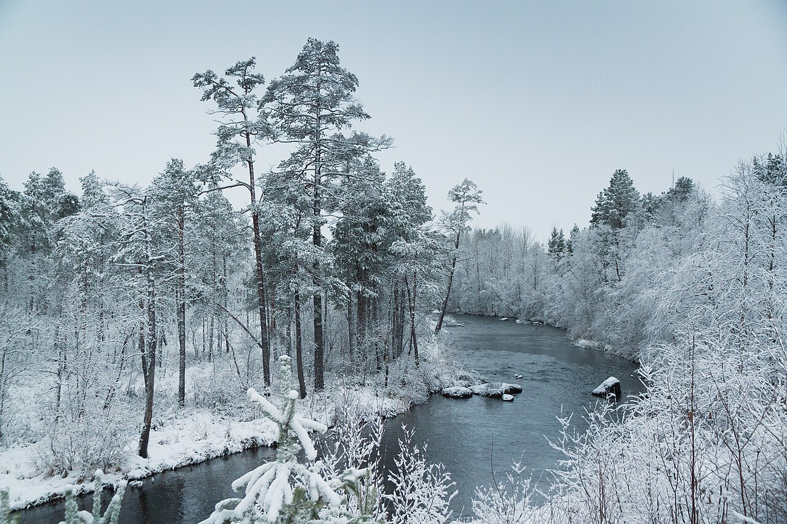

Talvi
Talvi on vuoden kylmin vuodenaika, joka Suomessa kestää yleensä joulukuusta helmikuuhun. Talvella lämpötilat laskevat usein pakkasen puolelle, ja lumi peittää maan. Talvella päivät ovat lyhyitä ja yöt pitkiä..
Talvella monet nauttivat ulkoilusta, kuten hiihtämisestä, luistelusta ja pulkkailusta. Lisäksi talvella vietetään monia juhlia, kuten joulua ja uudenvuoden juhlaa. Talvi on myös aikaa, jolloin monet eläimet vaipuvat horrokseen tai muuttavat lämpimämpiin ilmastoihin selviytyäkseen kylmästä säästä.
Talvikuva

Talvinen maisema Inarista.